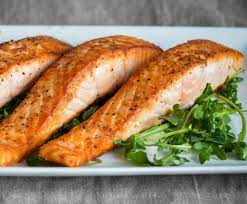

Salmon

Decription
Though there are many salmon recipes on the internet.
This is how my husband prepares the salmon for me.
A recipe that utilizes a mixture
of fresh lemon, lemon infused oil, and other spices or parsley garlic butter.
Ingredients
- 2 slices of salmon
- 1 lemon
- lemon infused olive oil or parsley garlic butter
- 2 tsp of garlic powder
- 2 tbp of black pepper
- Optional: italian blend to taste
Steps
- Preheat oven to 350 degree F
- Place salmon slices in glass casserole dish
- Optional: Pour oil over salmon slices
- Add garlic, pepper, and desired seasoning
- Optional: Place parsley garlic butter on top of salmon
- Add garlic, pepper, lemon seasoning, and italian blend to bowl
- Cook salmon for 20-30 minutes
- Optional: Squeeze lemon juice onto salmon